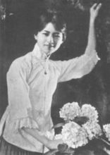

你若盛开，清风自来：那些人遇见的林徽因
林徽因
林徽因的祖父是林孝恂，进士出身，历官浙江金华、孝丰等地。父亲林长民毕业于日本早稻田大学，擅诗文，工书法，曾任北洋政府司法总长等职；叔叔林觉民。
早年时期

1904年6月出生于浙江，随祖父母居住；5岁，由大姑母林泽民授课发蒙；8岁，移居上海，入虹口爱国小学学习。
1916年，因父在北洋政府任职，举家迁往北京，就读于英国教会办的北京培华女中。
1920年4月，随父游欧洲，在伦敦受到房东女建筑师影响，立下了攻读建筑学的志向。在此期间，她还结识了父亲的弟子诗人徐志摩，对新诗产生浓厚兴趣。
1923年，徐志摩、胡适等人在北京成立新月社，林徽因常常参加新月社举办的文艺活动，曾登台演出印度诗人泰戈尔的诗剧《齐德拉》，饰演主角齐德拉公主，台词全用英语。她流利的英语和俊秀的扮相，在文艺界留下深刻印象。
1924年6月，林徽因和梁思成（梁启超长子），同时赴美攻读建筑学。
1924年9月，两人一起进入宾夕法尼亚大学美术学院学习，均从三年级课程读起。梁思成在美术学院建筑系，因建筑系不收女生，林徽因即注册在美术系，林徽因注册的英文名字是Lin Phyllis Whei-Yin。但是她仍选修了建筑系的主要课程，实现了自己的志愿。
1927年夏，从美术学院毕业后，又入耶鲁大学戏剧学院学习舞台美术设计半年。
1928年春，她同梁思成结婚。
1928年8月，夫妻偕同回国，一起受聘于东北大学建筑系。林徽因在到职前先回福建探亲，曾应福建师范学校和英华中学之请，作《建筑与文学》和《园林建筑艺术》的演讲。又为其叔林天民设计福州东街文艺剧场。翌年，到东北大学讲授《雕饰》和专业英语
古建考察
从1930年到1945年，梁思成林徽因夫妇二人共同走了中国的15个省，190多个县，考察测绘了2738处古建筑物， 很多古建筑就是通过他们的考察得到了世界、全国的认识，从此加以保护。比如像河北赵州大石桥、武义延福寺、山西的应县木塔、五台山佛光寺等。 也正是由于在山西的数次古建筑考察，使梁思成破解了中国古建筑结构的奥秘，完成了对《营造法式》这部“天书”的解读。
文学创作
林徽因在从事建筑科学研究之余，也开始从事文学创作。1931年4月，她的第一首诗《谁爱这不息的变幻》以“徽音”为笔名， 发表于《诗刊》第二期。以后几年中，又在《诗刊》《新月》《北斗》、天津《大公报》《文学杂志》等，先后发表了几十篇作品 。大部分是诗歌，也有散文、小说、戏剧和文学评论。她的诗多数是以个人情绪的起伏和波澜为主题，探索生活和爱的哲理。 诗句委婉柔丽，韵律自然，受到文学界和广大读者的赞赏，奠定了她作为诗人的地位。当时，她曾被聘为北平女子文理学院外语系讲授《 英国文学》课程，负责编辑《大公报·文艺丛刊·小说选》，还担任《文学杂志》的编委。她经常参加北平文学界读诗会等活动。1936年， 平津各大学及文化界发表《平津文化界对时局宣言》，向国民政府提出抗日救亡的八项要求，林徽因是文艺界的发起人之一。
流亡时期
1937年夏，她在山西五台山地区发现中国最古老的一座木结构建筑——建于唐代的佛光寺大殿。正当她要进行深入研究时， “七七事变”爆发，她被迫中断野外调查工作，不久，北平沦陷，全家辗转逃难到昆明。次年，她为云南大学设计了具有民族风格的女生宿舍
颠沛流离的生活和艰苦的物质条件，使她肺病复发。在病榻上，她通读了廿四中有关建筑的部分，为写《中国建筑》搜集资料， 经常工作到深夜。这个时期，她的文学作品不多，在她若干诗稿中， 迷惘、惆怅、苍凉、沉郁已代替了战前那恬静、飘逸、清丽、婉约的格调。诗中时时流露出了关怀祖国前途、命运的情愫。
逝世
1955年4月1日6时20分，林徽因病逝于同仁医院，享年51岁。林徽因治丧委员会由张奚若、周培源、钱端升、 钱伟长、金岳霖等13人组成。4月3日，林徽因追悼会在北京市金鱼胡同贤良寺举行。去世后， 她的遗体安葬在八宝山革命公墓，墓碑上刻着“建筑师林徽因墓”。墓碑下方有一块刻着秀丽花圈的汉白玉。这原来是为天安门前 人民英雄纪念碑碑座雕饰试刻的一个样品，人民把它作为一篇独特的无字墓志铭，奉献给它的创作者林徽因
社会评价
萧乾：听说徽因得了很严重的肺病，还经常得卧床休息。可她哪像个病人，穿了一身骑马装……她说起话来，别人几乎插不上嘴。 徽因的健谈绝不是结了婚的妇人的那种闲言碎语，而常是有学识，有见地，犀利敏捷的批评……她从不拐弯抹角， 模棱两可。这种纯学术的批评，也从来没有人记仇。我常常折服于徽因过人的艺术悟性。（萧乾：《才女林徽因》）
冰心：“她很美丽，很有才气。”比较林徽因和陆小曼时，更以为林徽因“俏”、陆小曼不俏。 与林徽因一起长大的堂姐堂妹，几乎都能细致入微地描绘她当年的衣着打扮、 举止言谈是如何地令她们倾倒。（陈钟英：《人们记忆中的林徽因——采访札记》）